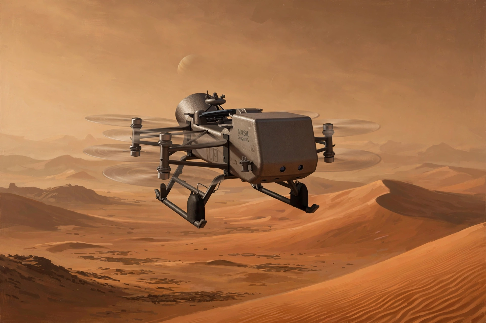

NASA Science · Missions
| Dragonfly (Titan rotorcraft) | |
|---|---|
| Operator | NASA (Johns Hopkins APL) |
| Destination | Titan, Saturn's largest moon |
| Type | Rotorcraft lander |
| Science | Prebiotic chemistry, habitability |

Dragonfly is a planned NASA New Frontiers mission: a car-sized, nuclear-powered rotorcraft that will fly to dozens of sites on Saturn's moon Titan — the world described in the Titan article — landing on dunes and impact craters to sample surface materials and study prebiotic chemistry. Its rotors let it cover far more ground than a traditional rover could.
The mission is being developed by the Johns Hopkins Applied Physics Laboratory, with launch planned for the late 2020s and arrival at Titan in the mid-2030s; exact dates have moved during development. On Titan's dense atmosphere and low gravity, flight is easier than on Earth, so Dragonfly will hop between geologically varied locations, including the Selk impact crater, where liquid water may once have mixed with organics.